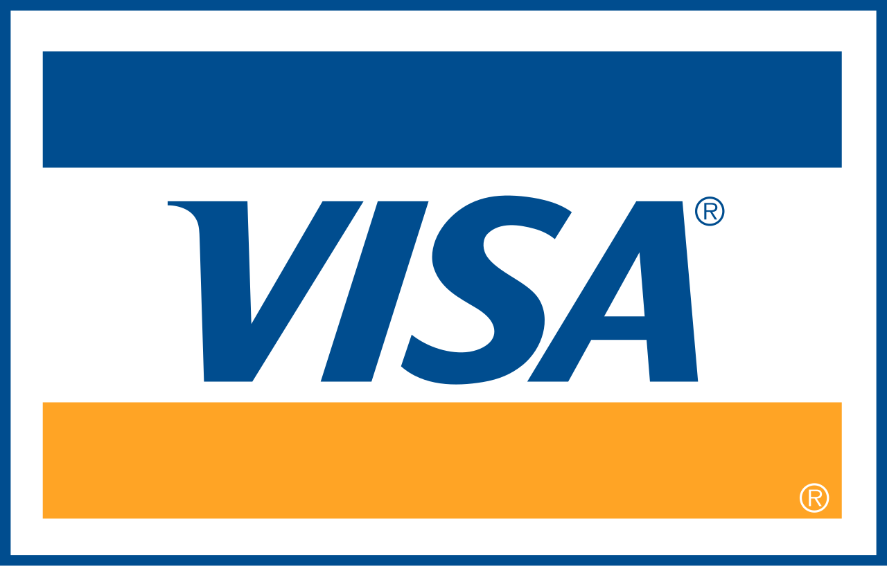

홈 > 브랜드 매거진 > Paypal
Paypal
Paypal는 2024년에 기록된 Payment Infrastructure Brands 계열의 브랜드 아이덴티티 사례입니다. Pentagram가 아이덴티티 작업의 디자이너로 기록되어 있습니다. 로고, 타입, 컬러, 아트 디렉션, 애플리케이션 섹션으로 구성된 시각 시스템입니다.
산업 분야 기술·전자 · 공개 등급 편집 검수 · 브랜드 평가 4 ★

한눈에 보는 브랜드
브랜드 관점
공개 메타데이터와 에셋 요약을 기준으로 아이덴티티 구조를 확인할 수 있습니다.
시작과 성장
페이팔은 1998년 12월 피터 틸, 맥스 레브친, 루크 노섹이 휴대용 기기 보안 소프트웨어 회사 콘피니티(Confinity)로 출발한 미국의 글로벌 결제 기업이다. 사업 모델이 디지털 지갑으로 전환되며 1999년 첫 전자결제 서비스를 선보였고, 2000년 3월 일론 머스크가 세운 온라인 금융 서비스 X.com과 합병한 뒤 2001년 페이팔로 사명을 통일했다.
2002년 2월 상장해 약 7천만 달러를 조달했고 같은 해 이베이에 인수되어 이베이 마켓의 표준 결제 수단으로 자리 잡았다. 이후 2015년 7월 이베이에서 분사해 독립 상장사가 되었다.
초기 핵심 인물들은 이후 실리콘밸리 창업 생태계로 퍼져 ‘페이팔 마피아’로 불렸다.
제품과 서비스
개인 송금과 온라인·오프라인 가맹점 결제를 아우르는 디지털 지갑이 핵심이며, 모바일 결제 앱 벤모(Venmo)와 후불결제(BNPL) 서비스를 보유한다. 2024년 리브랜딩은 신규 데빗카드 출시와 함께 공개되었고, 흑백 중심 팔레트와 전용 서체 PayPal Pro를 카드·앱·웹 등 결제 접점 전반에 적용했다.
사람들
현재 상태
2024년 9월 페이팔은 디자인 스튜디오 펜타그램(파트너 안드레아 트라부코캄포스 팀)이 주도한 브랜드 리프레시를 공개했다. 20여 년 쓰던 파란 워드마크를 버리고 전용 서체 PayPal Pro(리네토의 LL Supreme을 커스터마이즈한 푸투라 계열)와 소형용 PayPal Pro Text를 도입했으며, 흑백 기조에 명·중·암 블루 세 톤으로 팔레트를 정제하고 노란색을 제거했다.
이중 P 모노그램은 모서리를 날카롭게 다듬고 블루 겹침 대비를 강화했으며, 워드마크와 분리해 독립 운용할 수 있게 했다. 탭·클릭·스와이프·플립 등 실제 결제 제스처에서 착안한 모션 언어로 타이포그래피에 움직임을 부여한 것이 특징이다.
타임라인
BI/CI 변천사
확인된 BI/CI 이미지가 아직 없습니다.
함께 읽을 브랜드
 브랜드·비즈니스 · 편집 검수Time
브랜드·비즈니스 · 편집 검수TimeTime는 2023년에 기록된 Designed by For the People 계열의 브랜드 아이덴티티 사례입니다. For The People가 아이덴티티 작업의 디...
 기술·전자 · 편집 검수Mastercard
기술·전자 · 편집 검수MastercardMastercard는 2016년에 기록된 Payment Infrastructure Brands 계열의 브랜드 아이덴티티 사례입니다. Pentagram, Michael...

기술·전자 · 편집 검수VisaVisa는 2022년에 기록된 Payment Infrastructure Brands 계열의 브랜드 아이덴티티 사례입니다. Mucho가 아이덴티티 작업의 디자이너로 기...
YO
YO!
브랜드·비즈니스 · 편집 검수YO!YO!는 2016년에 기록된 Designed by Paul Belford Ltd 계열의 브랜드 아이덴티티 사례입니다. Paul Belford Ltd가 아이덴티티 작업...
Fa
Faculty AI
기술·전자 · 편집 검수Faculty AIFaculty AI는 2024년에 기록된 AI Brands 계열의 브랜드 아이덴티티 사례입니다. Koto가 아이덴티티 작업의 디자이너로 기록되어 있습니다. 로고, 타...
Vi
Visual Electric
기술·전자 · 편집 검수Visual ElectricVisual Electric는 2024년에 기록된 AI Brands 계열의 브랜드 아이덴티티 사례입니다. Manual가 아이덴티티 작업의 디자이너로 기록되어 있습니다...
A-
A-TO-B
기술·전자 · 편집 검수A-TO-BA-TO-B는 2016년에 기록된 Retail 계열의 브랜드 아이덴티티 사례입니다. Stockholm Design Lab가 아이덴티티 작업의 디자이너로 기록되어 있습...
Ch
Checkmyfile
기술·전자 · 편집 검수CheckmyfileCheckmyfile는 2024년에 기록된 Digital Products & Services 계열의 브랜드 아이덴티티 사례입니다. Ragged Edge가 아이덴티티...